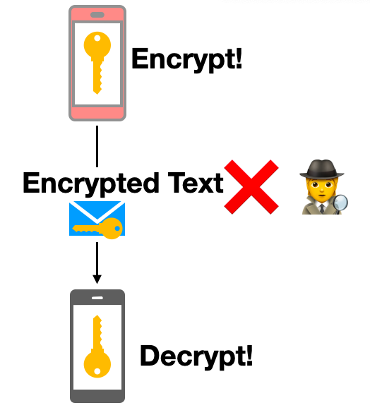
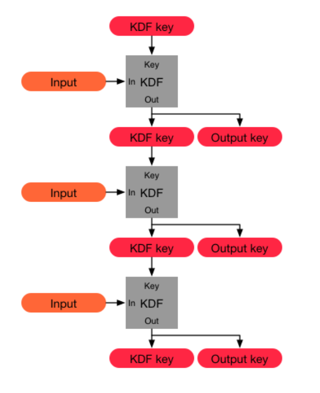
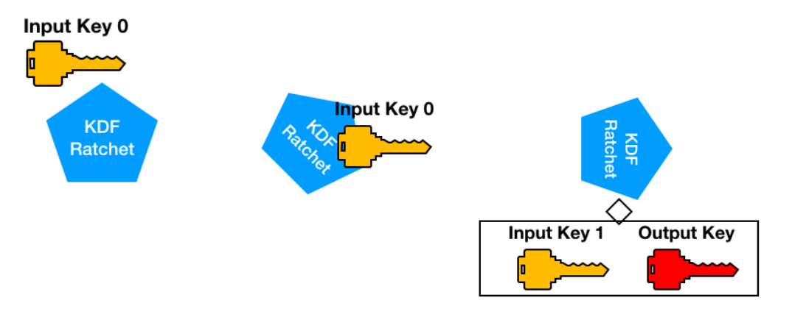
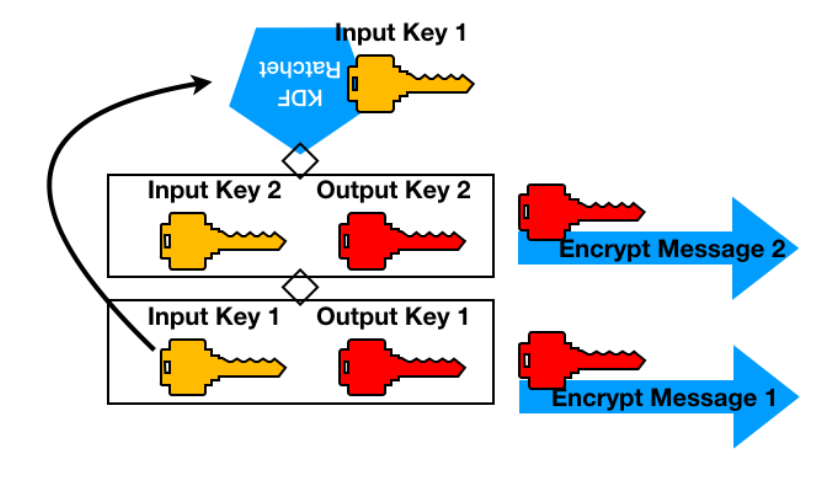
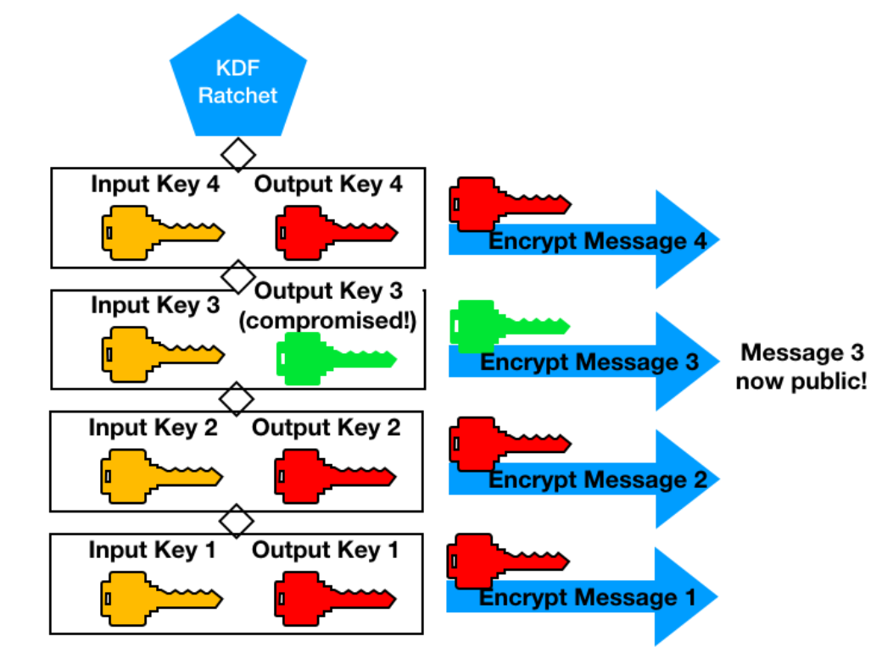
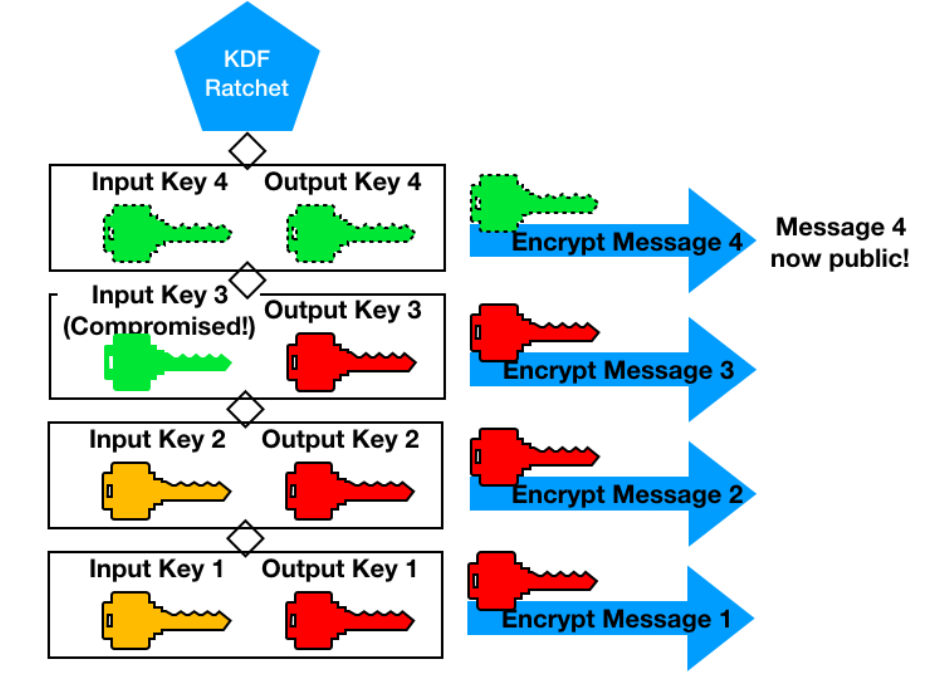
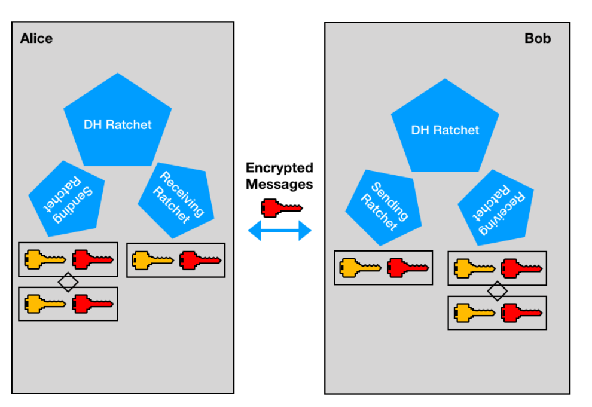

Introduction
This is an article I wrote about how the signal algorithm works. It was for a technical audience, so readers who aren't coming from that background may find the work a little dense or confusing (sorry!).
What is Signal?
Signal is a secure end-to-end encrypted messaging app available on smartphones, tablets, and desktop computers. As a feature-rich application it provides voice chat, text messaging, and multi-media sharing. The protocol which allows for this end-to-end encryption (the titular signal protocol) is publicly documented and has been adapted into other chat systems such as WhatsApp and facebook messenger.
E2EE
‘End-to-end encryption’ as a term describes the security of data being communicated between two parties, specifically whether or not the data is unencrypted at any point on its journey between the sender and receiver. Some messaging protocols do not perform any form of encryption, and so anyone who might intercept the data is able to immediately read it without applying any effort.
The purpose of end-to-end encryption is to encrypt messages before they are sent, and to only decrypt them once they reach their destination, such that nobody who is able to take control of a section of that delivery / routing system has the capacity to read the data easily. The relative security of this encryption process (the difficulty of breaking the encryption) depends upon many factors, such as how the elements which perform the encryption are generated (keys), and how they are communicated.

It is also important to note that this form of security does not protect against third parties reading the information either before it is sent or once it reaches the end destination - broadly speaking,
if you are able to read it, someone else is too. The software which resolves encrypted messages into cleartext to display on a device inherently has access to the raw message, and so if it is exploited by a nefarious party the encryption provided through the communication protocols will not prevent a data breach regardless of the robustness of that protocol.
The signal protocol performs its end-to-end encryption through a series of algorithmic processes. The main ones I'll talk about include the key derivation function (KDF) and the processes known as ‘ratchets’.
As an overview, the two clients in the communication system exchange an initial set of information to generate a key used to to encrypt their messages. This key is continually changed in a way which is predictable to both parties, such that a key need not be reused on any message even if one of the parties is unreachable for period of time and is unavailable for a new two-party key derivation process. However, this would imply a security flaw on its own - an individual who breaks an initial key would have access to the subsequent keys that can be predicted from that point. Therefore within the algorithm there is a built-in secondary process which allows the entire key generation process to reset periodically. As a whole, these key derivation, predictable generation (ratcheting), and reset, together form the larger algorithm known as the double ratchet.
KDF
As the first step of this entire process, the Diffie-Helmen protocol is used in order to come to an agreement of an initial key between the parties who wish to communicated. The particular version of this protocol used is the Extended Triple Diffie-Hellman, or ‘X3DH’. X3DH uses a series of public keys to generate a shared private key, in particular the following:
- Identity Key: Long term key which identifies an individual, generated at install of the app
- Ephemeral Key: Temporary key generated on the fly
- Signed Pre-Key: Key re-generated periodically and signed by the identity key
- One Time Pre-Key: Pool of one-time-use keys generated at install and replenished as needed.
The initial X3DH protocol begins at install time, far before the initial message is sent. First, a user (now known as Bob) must generate an identity key, a signed pre-key, a pre-key signature for verification, and a set of one-time pre-keys, and provide them to a server which is available to the public. Anyone who wishes to participate in communication does the same procedure when they install the app on their mobile devices.
When another user (Alice) wishes to communicate to Bob over this end-to-end communication protocol, first she must fetch a pre-key bundle from the server. This contains all of the information Bob uploaded before, except that only one pre-key is fetched (if available) and then is immediately deleted from the server (as it is only for one-time-use).
With this key bundle, Alice then begins the shared secret key generation process:
SK generation process when one-time pre-key is not available:
- DH1: DH(IKA, SPKB)
- DH2: DH(EKA, IKB)
- DH3: DH(EKA, SPKB)
- SK: KDF(DH1 || DH2 || DH3).
SK generation process when one-time pre-key is available:
- DH1: DH(IKA, SPKB)
- DH2: DH(EKA, IKB)
- DH3: DH(EKA, SPKB)
- DH4: DH(EKA, OPKB)
- SK: KDF(DH1 || DH2 || DH3).
As we can see, DH1/DH2 provide mutual authentication - they encode identity keys and signed pre-keys together such that it’s clear who is talking to who, and DH3/DH4 provide forward secrecy - they can be continually changed over time in order to keep the key constantly shifting and out of date for anyone who might manage to break it. This is also why the pre-key is optional at this stage, some amount of security is traded off for efficiency - if Bob receives a great deal of messages while his phone is off, he may not have the opportunity to replenish his stock of one-time pre-keys before they run out. This protocol has made the design choice that the initial security of the first message may be weakened such that communication even under such conditions.

Figure showing the KDF keychain via the signal documentation.
The equations above include a seemingly mysterious “KDF”. This is the Key Derivation Function which is one of the essential motors behind any key-based encryption protocol. At its most essential, the KDF used by signal is a chain-able function which takes in a key, and an input, and output both a new key for the chain, and an output key for secondary uses. These outputs are indistinguishable from random data from the perspective of anyone who does not have access to the initial input key.
By merging these properties of the KDF, we can generate several important properties intrinsic to the signal protocol (pulled from the signal documentation):
- Resilience: The output keys appear random to an adversary without knowledge of the KDF keys. This is true even if the adversary can control the KDF inputs.
- Forward security: Output keys from the past appear random to an adversary who learns the KDF key at some point in time.
- Break-in recovery: Future output keys appear random to an adversary who learns the KDF key at some point in time, provided that future inputs have added sufficient entropy.
However, the full utility of the KDF comes into play when it is settled within the larger concept of ‘ratcheting’.
Ratchet
The conceptual model of a ratchet is effectively a one way cog - it can only proceed forward, never backward. The KDF is a kind of ratchet in that one cannot backtrack from output to input - the function only proceeds forward (this is done via hashing). As this function can be chained together to produce a series of seemly random numbers (which yet are reproducible based on fixed inputs) its ratcheting behavior can be used to simultaneously generate an identical key for both Alice and Bob; provided they know how many iterations to run KDF and which inputs to apply.

These iterative outputs of KDF are known as chains, and communicating parties maintain both a sending and receiving chain (the sending chain of Alice producing the same value as the receiving chain of Bob).
For each message sent, Alice will re-run KDF with the old message key, encrypt the message with the output key, and send it. Alice can freely continue doing this regardless of Bob’s ability to receive communication and negotiate a new key. When Bob begins receiving messages, he can simply iterate his corresponding KDF for each message (perform his ratchet) to perform symmetric key decryption to reveal the message contents.

If one examines this property in isolation, it might be noticed that these chains do not provide security to future messages, it only protects against a new key being used to derive a key for an older message encrypted with an older key. By virtue of the KDF chains behaving predictably when supplied with corresponding inputs, a nefarious eavesdropper with a broken input key could run the KDF and generate all future keys.

A compromised output key would expose a single encrypted message.

A compromised input key would compromise all further keys and expose all further messages.
Double Ratchet
This key vulnerability highlights the need for further security - which is where the second ratchet comes into play. Periodically, either Alice or Bob will trigger a new run of the initial X3DH Diffie-Helmen protocol (known as the DH ratchet), and generate an entirely new set of sending and receiving chains. This restricts the scope of vulnerability for a key to the message it encrypted, and the messages which follow only until the DH ratchet is run again.
One might also notice that the KDF is used both for the chain ratchet and the DH ratchet. This is a useful feature of the algorithm - the inputs to KDF can either be solely a prior key (used for the sending / receiving chain) or include a set of additional values. These additional values are composed of the elements collected to generate the secret key - the pre key bundle and the private key information. Therefore, the ratchet ‘engine’ will behave like a DH key generator when needed, and simply iterate to make a new key via simple hashing against the input key otherwise.

As we can see, this end-to-end encryption provides several discrete mechanisms of protection against nefarious agents. First - the encryption provided by the output keys generated by our KDF ensure we know who we are talking to (via the signed identity key) and make the contents appear like random data to any observer. If somehow an observer is able to gain access to a key, the scope of that breach is inherently limited. An output key will read only one message, and input key will only read half of a conversation (sending or receiving chain) and only for a limited duration of time (messages after the breached key until a re-run of DH).
<- Back to Encryption